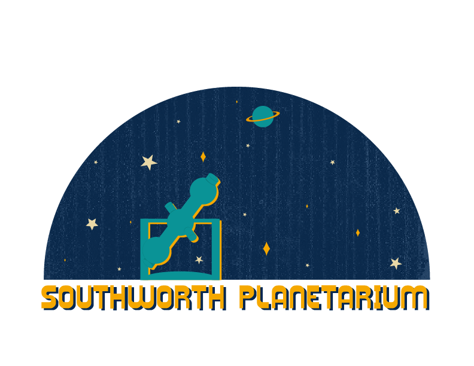
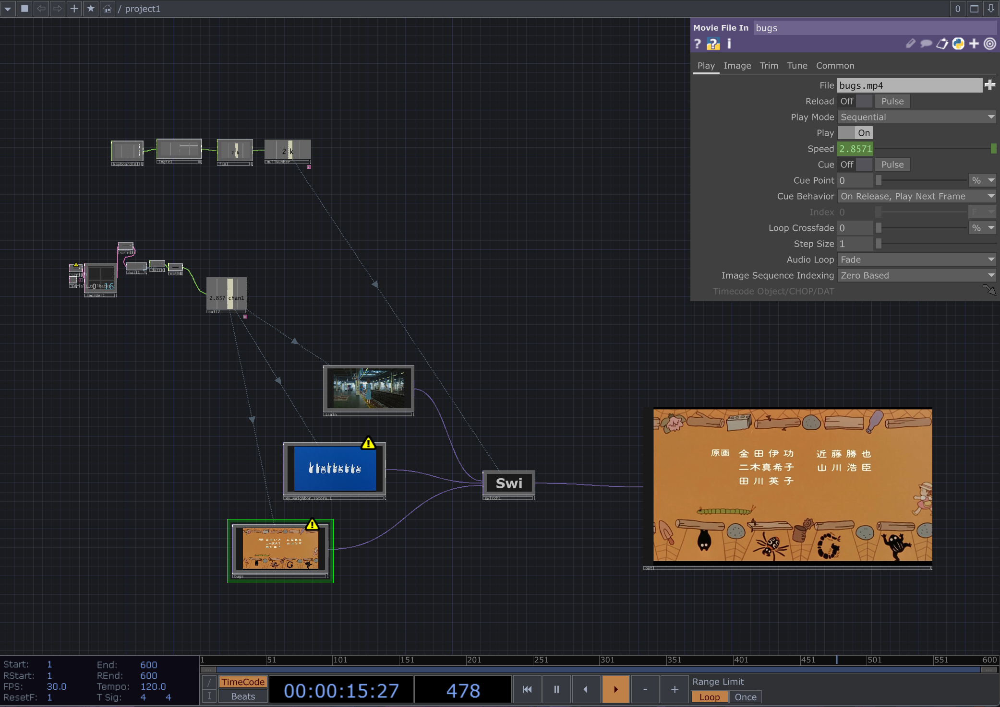

Goal: My goal for this project was to create a logo that encompassed the retro feeling of the Southworth planetarium and the reality of the planetarium itself.
Goal: My goal for this project was to create a cryptid that was both a moose and nature itself made from plants. My cryptid protects Baxter State Park.

My goal for this project was to create a video that showed a difference in how women are perceived versus how they want to be perceived. I ended up focusing on the idea of how they are perceived through premiere editing and old video/ audio clips.
Video Project: NaturallyMy goal for this project was to use an ultrasonic sensor to sense the distance between the sensor with the people in the room. My project makes people move closer and farther away from the sensor to speed up and to slow down/reverse the video playing. Three videos can be changed between themselves with buttons.
-Image of my .toe file used to create the art.